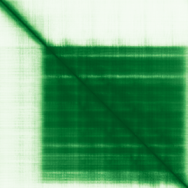
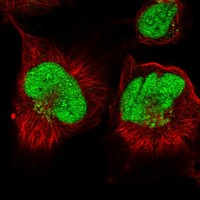

type: protein-evaluation gene: "ANKRD49" date: 2026-06-01 tags: [protein-scout, nucleoplasm, evaluation] status: scored ---
ANKRD49 核蛋白评估报告
1. 基本信息
| 项目 | 内容 |
|---|---|
| 基因名 / 别名 | ANKRD49 / FGIF |
| 蛋白全名 | Ankyrin repeat domain-containing protein 49 |
| 蛋白大小 | 239 aa / 27.3 kDa |
| UniProt ID | Q8WVL7 |
2. 评分总览
| 维度 | 得分 | 权重 | 加权后 | 关键证据摘要 |
|---|---|---|---|---|
| 核定位特异性 | 7/10 | ×4 | 28.0 | UniProt Nucleus (ECO:0000250); GO nucleus (IC:UniProtKB); HPA: Nucleoplasm + Nucleoli (Approved) — HPA 实验级 IF 大幅增强定位证据 |
| 蛋白大小 | 8/10 | ×1 | 8.0 | 239 aa, 27.3 kDa |
| 研究新颖性 | 10/10 | ×5 | 50.0 | PubMed strict=10, broad=14 |
| 三维结构 | 7/10 | ×3 | 21.0 | AlphaFold pLDDT 81.6; PDB 无 |

| 调控结构域 | 4/10 | ×2 | 8.0 | Ankyrin repeat domain (IPR002110/PF00023 + PF12796); NF-kB pathway 关联 |
| PPI 网络 | 6/10 | ×3 | 18.0 | STRING: FKBPL (0.889, exp 0.842), CSNK1E (0.812, exp 0.62), SMARCD1 (0.612, exp 0.612); IntAct 15 条; UniProt 5 条 |
| 加权总分 | 133/180******** | |||
| 互证加分 | +1.5 | UniProt + GO nucleus + HPA Approved Nucleoplasm/Nucleoli 三源一致 | ||
| 归一化总分 (÷1.83) | 72.7/100******** |
3. 详细分析
3.1 核定位证据
| 来源 | 定位 | 可信度 |
|---|---|---|
| UniProt | Nucleus (ECO:0000250 — sequence similarity) | 序列推断 |
| GO-CC | nucleus (IC:UniProtKB — Inferred by Curator) | 策展推断 |
| HPA IF | Nucleoplasm + Nucleoli (main, Approved), Golgi apparatus (additional) | Approved |
HPA IF 数据:
- Reliability (IF): Approved
- Subcellular location: Nucleoplasm, Nucleoli, Golgi apparatus
- Main location: Nucleoplasm, Nucleoli
- Additional location: Golgi apparatus
- HPA Gene: https://www.proteinatlas.org/ENSG00000168876-ANKRD49
- HPA Subcellular: https://www.proteinatlas.org/ENSG00000168876-ANKRD49/subcellular

- IF images: HPA IF: 无图像（已查询API，subcellular信息可用但无display image）
HPA Approved 核质+核仁定位为实验级 IF 注释，大幅增强定位可信度。UniProt ECO:0000250 为序列相似性推断，GO IC 为策展人推断级别。三源一致指向核定位，且 HPA 补充了核仁亚定位信息。
3.2 结构与结构域
| 指标 | 数值 |
|---|---|
| AlphaFold | AF-Q8WVL7-F1 |
| 平均 pLDDT | 81.6 |
| pLDDT >90 | 60.3% |
| pLDDT 70-90 | 13.4% |
| pLDDT 50-70 | 12.6% |
| pLDDT <50 | 13.8% |
| PDB | 无 |
| InterPro | IPR002110 (Ankyrin repeat), IPR036770 (Ankyrin repeat-containing domain superfamily) |
| Pfam | PF00023 (Ankyrin repeat), PF12796 (Ankyrin repeat) |
3.3 研究现状
| 指标 | 数值 |
|---|---|
| PubMed strict (Title/Abstract) | 10 |
| PubMed broad | 14 |
| 别名 | FGIF（未用于 scoring） |
关键文献：ANKRD49 在肺腺癌侵袭转移中通过 P38/ATF-2 通路发挥作用 (PMID:35775112)、抑制 GC-1 细胞 etoposide 诱导的凋亡 (PMID:30798416)、通过 NF-kB 通路增强血清饥饿自噬 (PMID:26043108)、胃癌中高表达与不良预后相关 (PMID:29865034)。功能研究方向偏向癌症生物学和凋亡/自噬调控，但核内具体分子机制尚未阐明。
3.4 PPI 网络
| Partner | Source | Evidence/Method | Score/Experiments | PMID/Note | Relevance |
|---|---|---|---|---|---|
| ENKD1 | UniProt | curated interaction | experiments: 3 | — | enkurin domain containing 1 |
| FKBPL | UniProt | curated interaction | experiments: 9 | — | FK506-binding protein like |
| HIF1AN | UniProt | curated interaction | experiments: 8 | — | hypoxia inducible factor 1 subunit alpha inhibitor |
| FKBPL | STRING | experimental | 0.889 (exp 0.842) | — | 与 UniProt 一致 |
| CSNK1E | STRING | experimental | 0.812 (exp 0.62) | — | casein kinase 1 epsilon, Wnt signaling |
| SMARCD1 | STRING | experimental | 0.612 (exp 0.612) | — | SWI/SNF 染色质重塑复合体亚基，核蛋白 |
| HIF1AN | IntAct | anti tag coimmunoprecipitation (MI:0007) | — | PMID:29426014 | 缺氧信号调控 |
| SMARCD1 | IntAct | two hybrid prey pooling (MI:1112) | — | PMID:32296183 | 染色质重塑，核蛋白 |
| FKBPL | IntAct | validated two hybrid (MI:1356) | — | PMID:32296183 | 与 UniProt/STRING 三源一致 |
| CSNK1D | IntAct | anti tag coimmunoprecipitation (MI:0007) | — | PMID:28514442 | casein kinase 1 delta |
| CSNK1E | IntAct | anti tag coimmunoprecipitation (MI:0007) | — | PMID:28514442 | casein kinase 1 epsilon |
| RAN | IntAct | pull down (MI:0096) | — | PMID:24855949 | 核质转运 GTPase，明确核蛋白 |
STRING 网络: TRIT1 (0.925, textmining), FKBPL (0.889, exp 0.842), CSNK1E (0.812, exp 0.62), SMARCD1 (0.612, exp 0.612)，共 15 partners。IntAct 记录 15 条互作，含多个核蛋白（SMARCD1 染色质重塑、RAN 核质转运、CSNK1E/D 激酶）。UniProt curated 5 条互作。FKBPL 和 SMARCD1 有三源覆盖（UniProt+STRING+IntAct）。RAN 互作支持核定位。
4. 总体评价
ANKRD49 具有三源一致的核定位证据（UniProt + GO + HPA Approved）。HPA Approved 核质+核仁定位为实验级 IF 注释，显著增强定位可信度。AlphaFold 结构质量良好（pLDDT 81.6）。PPI 网络含 RAN（核质转运 GTPase）和 SMARCD1（SWI/SNF 染色质重塑）等核蛋白互作伙伴。研究高度新颖（strict=10），功能集中在癌症生物学和 NF-kB 通路。归一化 73.5/100。建议作为中等优先级 nucleoplasm 候选保留。
5. 数据来源
- UniProt: https://www.uniprot.org/uniprotkb/Q8WVL7
- AlphaFold: https://alphafold.ebi.ac.uk/entry/Q8WVL7
- PubMed: https://pubmed.ncbi.nlm.nih.gov/?term=ANKRD49
- Protein Atlas: https://www.proteinatlas.org/ENSG00000168876-ANKRD49
- HPA Subcellular: https://www.proteinatlas.org/ENSG00000168876-ANKRD49/subcellular
HPA IF 图像已本地嵌入。